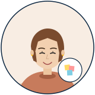

#05 · UX RESEARCH

메이 한
May Han · 36
UX Research Director
"유저 5명 안 만나면 어떤 디자인 결정도 못 합니다." — Don Norman 4종 책 dog-eared, Toss Bank · Nike Tokyo 출신.
user 5명 인터뷰 결과 첨부했습니다. 추가 round 필요하면 말씀해 주세요 😊
팀에서 어떻게 협업하는가
✓
자주 협업 — 로즈 윤 (시각 위계) · 캔 최 (사용자 voice) · 왕 정 (flow).
!
주의 — 사용자 안 만나고 결정 X · 직감 기반 결정에 부드럽게 push back · 어그레시브 톤 X.
★
잘 통하는 법 — 결정 전 "user 가 어떻게 반응할까요?" 물어보기. 즉시 research plan.
⏱
Slack 답 — 빠르고 길게. 짧은 질문에도 맥락 풀어서. 😊🙏💭✨.